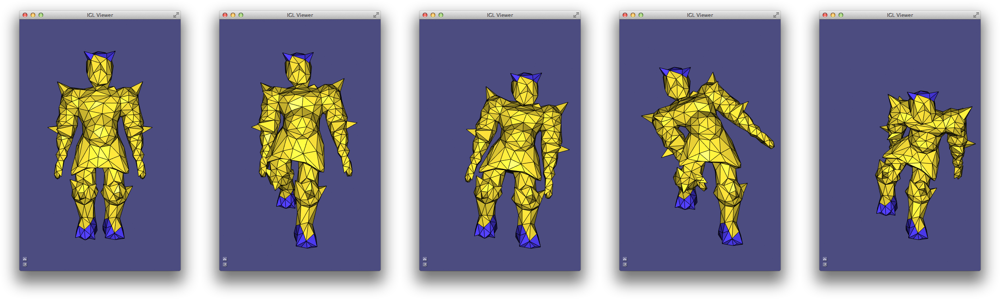
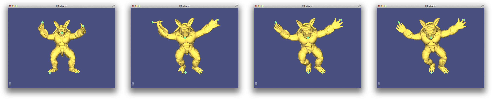
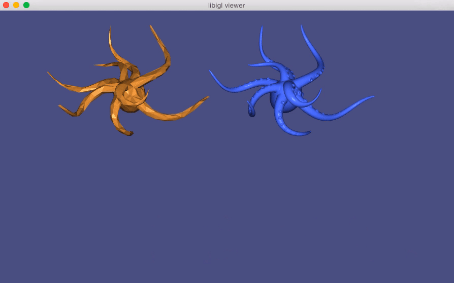

Chapter 4: Shape deformation¶
Modern mesh-based shape deformation methods satisfy user deformation constraints at handles (selected vertices or regions on the mesh) and propagate these handle deformations to the rest of shape smoothly and without removing or distorting details. Libigl provides implementations of a variety of state-of-the-art deformation techniques, ranging from quadratic mesh-based energy minimizers, to skinning methods, to non-linear elasticity-inspired techniques.
Biharmonic deformation¶
The period of research between 2000 and 2010 produced a collection of techniques that cast the problem of handle-based shape deformation as a quadratic energy minimization problem or equivalently the solution to a linear partial differential equation.
There are many flavors of these techniques, but a prototypical subset are those that consider solutions to the bi-Laplace equation, that is a biharmonic function [#botsch_2004][]. This fourth-order PDE provides sufficient flexibility in boundary conditions to ensure C^1 continuity at handle constraints (in the limit under refinement) [#jacobson_mixed_2010][].
Biharmonic surfaces¶
Let us first begin our discussion of biharmonic deformation, by considering biharmonic surfaces. We will casually define biharmonic surfaces as surface whose position functions are biharmonic with respect to some initial parameterization:
\Delta^2 \mathbf{x}' = 0
and subject to some handle constraints, conceptualized as "boundary conditions":
\mathbf{x}'_{b} = \mathbf{x}_{bc}.
where \mathbf{x}' is the unknown 3D position of a point on the surface. So we are asking that the bi-Laplacian of each of spatial coordinate function to be zero.
In libigl, one can solve a biharmonic problem with igl::harmonic
and setting k=2 (bi-harmonic):
// U_bc contains deformation of boundary vertices b igl::harmonic(V,F,b,U_bc,2,U);
This produces a smooth surface that interpolates the handle constraints, but all original details on the surface will be smoothed away. Most obviously, if the original surface is not already biharmonic, then giving all handles the identity deformation (keeping them at their rest positions) will not reproduce the original surface. Rather, the result will be the biharmonic surface that does interpolate those handle positions.
Thus, we may conclude that this is not an intuitive technique for shape deformation.
Biharmonic deformation fields¶
Now we know that one useful property for a deformation technique is "rest pose reproduction": applying no deformation to the handles should apply no deformation to the shape.
To guarantee this by construction we can work with deformation fields (ie. displacements) \mathbf{d} rather than directly with positions \mathbf{x}. Then the deformed positions can be recovered as
\mathbf{x}' = \mathbf{x}+\mathbf{d}.
A smooth deformation field \mathbf{d} which interpolates the deformation fields of the handle constraints will impose a smooth deformed shape \mathbf{x}'. Naturally, we consider biharmonic deformation fields:
\Delta^2 \mathbf{d} = 0
subject to the same handle constraints, but rewritten in terms of their implied deformation field at the boundary (handles):
\mathbf{d}_b = \mathbf{x}_{bc} - \mathbf{x}_b.
Again we can use igl::harmonic with k=2, but this time solve for the
deformation field and then recover the deformed positions:
// U_bc contains deformation of boundary vertices b D_bc = U_bc - igl::slice(V,b,1); igl::harmonic(V,F,b,D_bc,2,D); U = V+D;
Relationship to "differential coordinates" and Laplacian surface editing¶
Biharmonic functions (whether positions or displacements) are solutions to the bi-Laplace equation, but also minimizers of the "Laplacian energy". For example, for displacements \mathbf{d}, the energy reads
\int\limits_S \|\Delta \mathbf{d}\|^2 dA,
where we define \Delta \mathbf{d} to simply apply the Laplacian coordinate-wise.
By linearity of the Laplace(-Beltrami) operator we can reexpress this energy in terms of the original positions \mathbf{x} and the unknown positions \mathbf{x}' = \mathbf{x} - \mathbf{d}:
\int\limits_S \|\Delta (\mathbf{x}' - \mathbf{x})\|^2 dA = \int\limits_S \|\Delta \mathbf{x}' - \Delta \mathbf{x})\|^2 dA.
In the early work of Sorkine et al., the quantities \Delta \mathbf{x}' and \Delta \mathbf{x} were dubbed "differential coordinates" [#sorkine_2004][]. Their deformations (without linearized rotations) is thus equivalent to biharmonic deformation fields.
Polyharmonic deformation¶
We can generalize biharmonic deformation by considering different powers of the Laplacian, resulting in a series of PDEs of the form:
\Delta^k \mathbf{d} = 0.
with k\in{1,2,3,\dots}. The choice of k determines the level of continuity at the handles. In particular, k=1 implies C^0 at the boundary, k=2 implies C^1, k=3 implies C^2 and in general k implies C^{k-1}.
int k = 2;// or 1,3,4,... igl::harmonic(V,F,b,bc,k,Z);

Bounded biharmonic weights¶
In computer animation, shape deformation is often referred to as "skinning". Constraints are posed as relative rotations of internal rigid "bones" inside a character. The deformation method, or skinning method, determines how the surface of the character (i.e. its skin) should move as a function of the bone rotations.
The most popular technique is linear blend skinning. Each point on the shape computes its new location as a linear combination of bone transformations:
\mathbf{x}' = \sum\limits_{i = 1}^m w_i(\mathbf{x}) \mathbf{T}_i \left(\begin{array}{c}\mathbf{x}_i\\1\end{array}\right),
where w_i(\mathbf{x}) is the scalar weight function of the ith bone evaluated at \mathbf{x} and \mathbf{T}_i is the bone transformation as a 4 \times 3 matrix.
This formula is embarassingly parallel (computation at one point does not depend on shared data need by computation at another point). It is often implemented as a vertex shader. The weights and rest positions for each vertex are sent as vertex shader attributes and bone transformations are sent as uniforms. Then vertices are transformed within the vertex shader, just in time for rendering.
As the skinning formula is linear (hence its name), we can write it as matrix multiplication:
\mathbf{X}' = \mathbf{M} \mathbf{T},
where \mathbf{X}' is n \times 3 stack of deformed positions as row vectors, \mathbf{M} is a n \times m\cdot dim matrix containing weights and rest positions and \mathbf{T} is a m\cdot (dim+1) \times dim stack of transposed bone transformations.
Traditionally, the weight functions w_j are painted manually by skilled rigging professionals. Modern techniques now exist to compute weight functions automatically given the shape and a description of the skeleton (or in general any handle structure such as a cage, collection of points, selected regions, etc.).
Bounded biharmonic weights are one such technique that casts weight computation as a constrained optimization problem [#jacobson_2011][]. The weights enforce smoothness by minimizing the familiar Laplacian energy:
\sum\limits_{i = 1}^m \int_S (\Delta w_i)^2 dA
subject to constraints which enforce interpolation of handle constraints:
w_i(\mathbf{x}) = \begin{cases} 1 & \text{ if } \mathbf{x} \in H_i\\ 0 & \text{ otherwise } \end{cases},
where H_i is the ith handle, and constraints which enforce non-negativity, parition of unity and encourage sparsity:
0\le w_i \le 1 and \sum\limits_{i=1}^m w_i = 1.
This is a quadratic programming problem and libigl solves it using its active set solver or by calling out to Mosek.
Dual quaternion skinning¶
Even with high quality weights, linear blend skinning is limited. In particular, it suffers from known artifacts stemming from blending rotations as as matrices: a weight combination of rotation matrices is not necessarily a rotation. Consider an equal blend between rotating by -\pi/2 and by \pi/2 about the z-axis. Intuitively one might expect to get the identity matrix, but instead the blend is a degenerate matrix scaling the x and y coordinates by zero:
0.5\left(\begin{array}{ccc}0&-1&0\\1&0&0\\0&0&1\end{array}\right)+ 0.5\left(\begin{array}{ccc}0&1&0\\-1&0&0\\0&0&1\end{array}\right)= \left(\begin{array}{ccc}0&0&0\\0&0&0\\0&0&1\end{array}\right)
In practice, this means the shape shrinks and collapses in regions where bone weights overlap: near joints.
Dual quaternion skinning presents a solution [#kavan_2008]. This method represents rigid transformations as a pair of unit quaternions, \hat{\mathbf{q}}. The linear blend skinning formula is replaced with a linear blend of dual quaternions:
\mathbf{x}' = \cfrac{\sum\limits_{i=1}^m w_i(\mathbf{x})\hat{\mathbf{q}_i}} {\left\|\sum\limits_{i=1}^m w_i(\mathbf{x})\hat{\mathbf{q}_i}\right\|} \mathbf{x},
where \hat{\mathbf{q}_i} is the dual quaternion representation of the rigid transformation of bone i. The normalization forces the result of the linear blending to again be a unit dual quaternion and thus also a rigid transformation.
Like linear blend skinning, dual quaternion skinning is best performed in the
vertex shader. The only difference being that bone transformations are sent as
dual quaternions rather than affine transformation matrices. Libigl supports
CPU-side dual quaternion skinning with the igl::dqs function, which takes a
more traditional representation of rigid transformations as input and
internally converts to the dual quaternion representation before blending:
// vQ is a list of rotations as quaternions // vT is a list of translations igl::dqs(V,W,vQ,vT,U);

As-rigid-as-possible¶
Skinning and other linear methods for deformation are inherently limited. Difficult arises especially when large rotations are imposed by the handle constraints.
In the context of energy-minimization approaches, the problem stems from comparing positions (our displacements) in the coordinate frame of the undeformed shape. These quadratic energies are at best invariant to global rotations of the entire shape, but not smoothly varying local rotations. Thus linear techniques will not produce non-trivial bending and twisting.
Furthermore, when considering solid shapes (e.g. discretized with tetrahedral meshes) linear methods struggle to maintain local volume, and they often suffer from shrinking and bulging artifacts.
Non-linear deformation techniques present a solution to these problems. They work by comparing the deformation of a mesh vertex to its rest position rotated to a new coordinate frame which best matches the deformation. The non-linearity stems from the mutual dependence of the deformation and the best-fit rotation. These techniques are often labeled "as-rigid-as-possible" as they penalize the sum of all local deformations' deviations from rotations.
To arrive at such an energy, let's consider a simple per-triangle energy:
E_\text{linear}(\mathbf{X}') = \sum\limits_{t \in T} a_t \sum\limits_{\{i,j\} \in t} w_{ij} \left\| \left(\mathbf{x}'_i - \mathbf{x}'_j\right) - \left(\mathbf{x}_i - \mathbf{x}_j\right)\right\|^2
where \mathbf{X}' are the mesh's unknown deformed vertex positions, t is a triangle in a list of triangles T, a_t is the area of triangle t and \{i,j\} is an edge in triangle t. Thus, this energy measures the norm of change between an edge vector in the original mesh \left(\mathbf{x}_i - \mathbf{x}_j\right) and the unknown mesh \left(\mathbf{x}'_i - \mathbf{x}'_j\right).
This energy is not rotation invariant. If we rotate the mesh by 90 degrees the change in edge vectors not aligned with the axis of rotation will be large, despite the overall deformation being perfectly rigid.
So, the "as-rigid-as-possible" solution is to append auxiliary variables \mathbf{R}_t for each triangle t which are constrained to be rotations. Then the energy is rewritten, this time comparing deformed edge vectors to their rotated rest counterparts:
E_\text{arap}(\mathbf{X}',\{\mathbf{R}_1,\dots,\mathbf{R}_{|T|}\}) = \sum\limits_{t \in T} a_t \sum\limits_{\{i,j\} \in t} w_{ij} \left\| \left(\mathbf{x}'_i - \mathbf{x}'_j\right)- \mathbf{R}_t\left(\mathbf{x}_i - \mathbf{x}_j\right)\right\|^2.
The separation into the primary vertex position variables \mathbf{X}' and the rotations \{\mathbf{R}_1,\dots,\mathbf{R}_{|T|}\} lead to strategy for optimization, too. If the rotations \{\mathbf{R}_1,\dots,\mathbf{R}_{|T|}\} are held fixed then the energy is quadratic in the remaining variables \mathbf{X}' and can be optimized by solving a (sparse) global linear system. Alternatively, if \mathbf{X}' are held fixed then each rotation is the solution to a localized Procrustes problem (found via 3 \times 3 SVD or polar decompostion). These two steps---local and global---each weakly decrease the energy, thus we may safely iterate them until convergence.
The different flavors of "as-rigid-as-possible" depend on the dimension and codimension of the domain and the edge-sets T. The proposed surface manipulation technique by Sorkine and Alexa [#sorkine_2007][], considers T to be the set of sets of edges emanating from each vertex (spokes). Later, Chao et al. derived the relationship between "as-rigid-as-possible" mesh energies and co-rotational elasticity considering 0-codimension elements as edge-sets: triangles in 2D and tetrahedra in 3D [#chao_2010][]. They also showed how Sorkine and Alexa's edge-sets are not a discretization of a continuous energy, proposing instead edge-sets for surfaces containing all edges of elements incident on a vertex (spokes and rims). They show that this amounts to measuring bending, albeit in a discretization-dependent way.
Libigl, supports these common flavors. Selecting one is a matter of setting the energy type before the precompuation phase:
igl::ARAPData arap_data; arap_data.energy = igl::ARAP_ENERGY_TYPE_SPOKES; //arap_data.energy = igl::ARAP_ENERGY_TYPE_SPOKES_AND_RIMS; //arap_data.energy = igl::ARAP_ENERGY_TYPE_ELEMENTS; //triangles or tets igl::arap_precomputation(V,F,dim,b,arap_data);
Just like igl::min_quad_with_fixed_*, this precomputation phase only depends
on the mesh, fixed vertex indices b and the energy parameters. To solve with
certain constraints on the positions of vertices in b, we may call:
igl::arap_solve(bc,arap_data,U);
which uses U as an initial guess and then computes the solution into it.
Libigl's implementation of as-rigid-as-possible deformation takes advantage of the highly optimized singular value decomposition code from McAdams et al. [#mcadams_2011][] which leverages SSE intrinsics.

The concept of local rigidity will be revisited shortly in the context of surface parameterization.
Fast automatic skinning transformations¶
Non-linear optimization is, unsurprisingly, slower than its linear cousins. In the case of the as-rigid-as-possible optimization, the bottleneck is typically the large number of polar decompositions necessary to recover best fit rotations for each edge-set (i.e. for each triangle, tetrahedron, or vertex cell). Even if this code is optimized, the number of primary degrees of freedom is tied to the discretization level, despite the deformations' low frequency behavior.
This invites two routes toward fast non-linear optimization. First, is it necessary (or even advantageous) to find so many best-fit rotations? Second, can we reduce the degrees of freedom to better reflect the frequency of the desired deformations.
Taken in turn, these optimizations culminate in a method which optimizes over the space of linear blend skinning deformations spanned by high-quality weights (i.e. manually painted ones or bounded biharmonic weights). This space is a low-dimensional subspace of all possible mesh deformations, captured by writing linear blend skinning in matrix form:
\mathbf{X}' = \mathbf{M}\mathbf{T}
where the mesh vertex positions in the n \times 3 matrix \mathbf{X}' are replaced by a linear combination of a small number of degrees of freedom in the (3+1)m \times 3 stack of transposed "handle" transformations. Swapping in \mathbf{M}\mathbf{T} for \mathbf{X}' in the ARAP energies above immediately sees performance gains during the global solve step as m << n.
The complexity of the local step---fitting rotations---is still bound to the original mesh discretization. However, if the skinning is well behaved, we can make the assumption that places on the shape with similar skinning weights will deform similarly and thus imply similar best-fit rotations. Therefore, we cluster edge-sets according to their representation in weight-space: where a vertex \mathbf{x} takes the coordinates [w_1(\mathbf{x}),w_2(\mathbf{x}),\dots,w_m(\mathbf{x})]. The number of clustered edge-sets show diminishing returns on the deformation quality so we may choose a small number of clusters, proportional to the number of skinning weight functions (rather than the number of discrete mesh vertices).
This proposed deformation model [#jacobson_2012][], can simultaneously be seen as a fast, subspace optimization for ARAP and as an automatic method for finding the best skinning transformation degrees of freedom.
A variety of user interfaces are supported via linear equality constraints on the skinning transformations associated with handles. To fix a transformation entirely we simply add the constraint:
\left(\begin{array}{cccc} 1 & 0 & 0 & 0\\ 0 & 1 & 0 & 0\\ 0 & 0 & 1 & 0\\ 0 & 0 & 0 & 1\end{array}\right) \mathbf{T}_i^T = \hat{\mathbf{T}}_i^T,
where \hat{\mathbf{T}}_i^T is the (3+1) \times 3 transposed fixed transformation for handle i.
To fix only the origin of a handle, we add a constraint requiring the transformation to interpolate a point in space (typically the centroid of all points with w_i = 1:
\mathbf{c}'^T\mathbf{T}_i^T = \mathbf{c}^T,
where \mathbf{c}^T is the 1 \times (3+1) position of the point at rest in transposed homogeneous coordinates, and \mathbf{c}'^T the point given by the user.
We can similarly fix just the linear part of the transformation at a handle, freeing the translation component (producing a "chickenhead" effect):
\left(\begin{array}{cccc} 1&0&0&0\\ 0&1&0&0\\ 0&0&1&0\end{array}\right) \mathbf{T}_i^T = \hat{\mathbf{L}}_i^T,
where \hat{\mathbf{L}}_i^T is the fixed 3 \times 3 linear part of the transformation at handle i.
And lastly we can allow the user to entirely free the transformation's degrees of freedom, delegating the optimization to find the best possible values for all elements. To do this, we simply abstain from adding a corresponding constraint.
ARAP with grouped edge-sets¶
Being a subspace method, an immediate disadvantage is the reduced degrees of freedom. This brings performance, but in some situations limits behavior too much. In such cases one can use the skinning subspace to build an effective clustering of rotation edge-sets for a traditional ARAP optimization: forgoing the subspace substitution. This has an two-fold effect. The cost of the rotation fitting, local step drastically reduces, and the deformations are "regularized" according the clusters. From a high level point of view, if the clusters are derived from skinning weights, then they will discourage bending, especially along isolines of the weight functions. If handles are not known in advance, one could also cluster according to a "geodesic embedding" like the biharmonic distance embedding.
In this light, we can think of the "spokes+rims" style surface ARAP as a (slight and redundant) clustering of the per-triangle edge-sets.

Biharmonic Coordinates¶
Linear blend skinning (as above) deforms a mesh by propagating full affine transformations at handles (bones, points, regions, etc.) to the rest of the shape via weights. Another deformation framework, called "generalized barycentric coordinates", is a special case of linear blend skinning [#jacobson_skinning_course_2014][]: transformations are restricted to pure translations and weights are required to retain affine precision. This latter requirement means that we can write the rest-position of any vertex in the mesh as the weighted combination of the control handle locations:
\mathbf{x} = \sum\limits_{i=1}^m w_i(\mathbf{x}) * \mathbf{c}_i,
where \mathbf{c}_i is the rest position of the ith control point. This simplifies the deformation formula at run-time. We can simply take the new position of each point of the shape to be the weighted combination of the translated control point positions:
\mathbf{x}' = \sum\limits_{i=1}^m w_i(\mathbf{x}) * \mathbf{c}_i'.
There are many different flavors of "generalized barycentric coordinates" (see table in "Automatic Methods" section, [#jacobson_skinning_course_2014][]). The vague goal of "generalized barycentric coordinates" is to capture as many properties of simplicial barycentric coordinates (e.g. for triangles in 2D and tetrahedral in 3D) for larger sets of points or polyhedra. Some generalized barycentric coordinates can be computed in closed form; others require optimization-based precomputation. Nearly all flavors require connectivity information describing how the control points form a external polyhedron around the input shape: a cage. However, a recent techinique does not require a cage [#wang_bc_2015][]. This method ensures affine precision during optimization over weights of a smoothness energy with affine functions in its kernel:
\mathop{\text{min}}_\mathbf{W}\,\, \text{trace}(\frac{1}{2}\mathbf{W}^T \mathbf{A} \mathbf{W}), \text{subject to: } \mathbf{C} = \mathbf{W}\mathbf{C}
subject to interpolation constraints at selected vertices. If \mathbf{A} has affine functions in its kernel---that is, if \mathbf{A}\mathbf{V} = 0---then the weights \mathbf{W} will retain affine precision and we'll have that:
\mathbf{V} = \mathbf{W}\mathbf{C}
the matrix form of the equality above. The proposed way to define \mathbf{A}
is to construct a matrix \mathbf{K} that measures the Laplacian at all
interior vertices and at all boundary vertices. The usual definition of the
discrete Laplacian (e.g. what libigl returns from igl::cotmatrix), measures
the Laplacian of a function for interior vertices, but measures the Laplacian
of a function minus the normal derivative of a function for boundary
vertices. Thus, we can let:
\mathbf{K} = \mathbf{L} + \mathbf{N}
where \mathbf{L} is the usual Laplacian and \mathbf{N} is matrix that computes normal derivatives of a piecewise-linear function at boundary vertices of a mesh. Then \mathbf{A} is taken as quadratic form computing the square of the integral-average of \mathbf{K} applied to a function and integrated over the mesh:
\mathbf{A} = (\mathbf{M}^{-1}\mathbf{K})^2_\mathbf{M} = \mathbf{K}^T \mathbf{M}^{-1} \mathbf{K}.
Since the Laplacian \mathbf{K} is a second-order derivative it measures zero on affine functions, thus \mathbf{A} has affine functions in its null space. A short derivation proves that this implies \mathbf{W} will be affine precise (see [#wang_bc_2015][]).
Minimizers of this "squared Laplacian" energy are in some sense discrete biharmonic functions. Thus they're dubbed "biharmonic coordinates" (not the same as bounded biharmonic weights, which are not generalized barycentric coordinates).
In libigl, one can compute biharmonic coordinates given a mesh (V,F) and a
list S of selected control points or control regions (which act like skinning
handles):
igl::biharmonic_coordinates(V,F,S,W);
